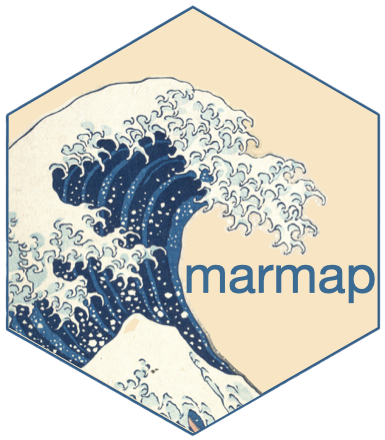

Create a new, (non circular) composite buffer from a list of existing buffers.
Source:R/mar_combine_buffers.R
mar_combine_buffers.RdCreates a new bathy object from a list of existing buffers of compatible dimensions.
Arguments
- ...
2 or more buffer objects as produced by
mar_create_buffer. Allbathyobjects within thebufferobjects must be compatible: they should have the same dimensions (same number of rows and columns) and cover the same area (same longitudes and latitudes).
Value
An object of class bathy of the same dimensions as the original bathy objects contained within each buffer objects. The resulting bathy object contains only NAs outside of the combined buffer and values of depth/altitude inside the combined buffer.
Examples
# load and plot a bathymetry
data(florida)
plot(florida, lwd = 0.2)
plot(florida, n = 1, lwd = 0.7, add = TRUE)
# add points around which a buffer will be computed
loc <- data.frame(c(-80,-82), c(26,24))
points(loc, pch = 19, col = "red")
# create 2 distinct buffer objects with different radii
buf1 <- mar_create_buffer(florida, loc[1,], radius=1.9)
buf2 <- mar_create_buffer(florida, loc[2,], radius=1.2)
# combine both buffers
buf <- mar_combine_buffers(buf1,buf2)
if (FALSE) { # \dontrun{
# Add outline of the resulting buffer in red
# and the outline of the original buffers in blue
plot(mar_outline_buffer(buf), lwd = 3, col = 2, add=TRUE)
plot(buf1, lwd = 0.5, fg="blue")
plot(buf2, lwd = 0.5, fg="blue")
} # }